아스텔라 제2부 · 선택안 아티팩트 심화 15안
사용자가 v6에서 고른 다섯 선택안의 좋아한 외형을 계승하고, 요청한 아티팩트 추가·교체·어깨 방패를 중심으로 각 세 안씩 심화했습니다. 선택안의 머리·인간형 체형·핵심 외피와 창은 유지하며 기능 성유물, 후방 구조와 결합 방식을 달리했습니다. 싫어한 장치는 작은 장식 수정으로 반복하지 않고 기능부터 교체했습니다. 이미지를 누르면 1536 × 1024 원본 PNG가 열립니다.
Stage01 · 기억을 흘리는 정찰병
선택 원본: v6 Stage01 선택 2안
봉인마스크·비대칭 갈비·모래시계·캘리퍼 계승, 기억/광학/분신 위상 아티팩트 추가


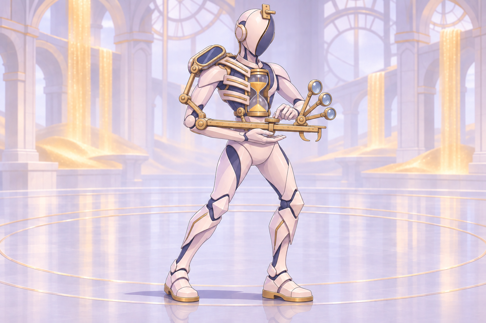

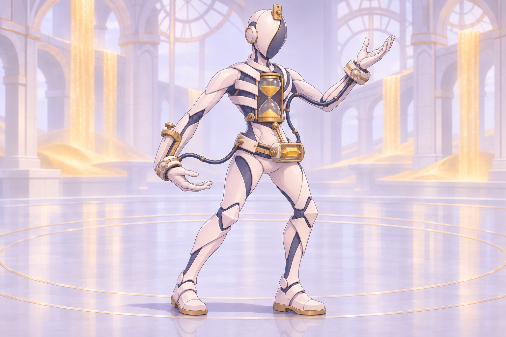
Stage02 · 끝나지 않는 진혼곡의 무희
선택 원본: v6 Stage02 선택 1안
타원 봉인면·파이프 목·긴 갈비 외형 유지, 옆뒤 대형 원통/행거를 컴팩트 등 공명 기관으로 교체


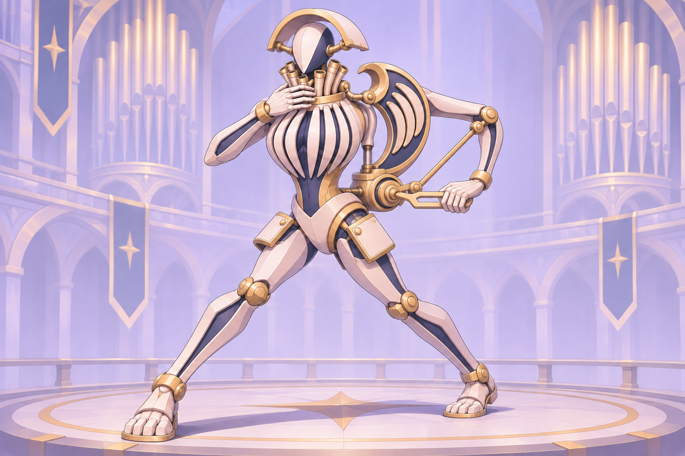

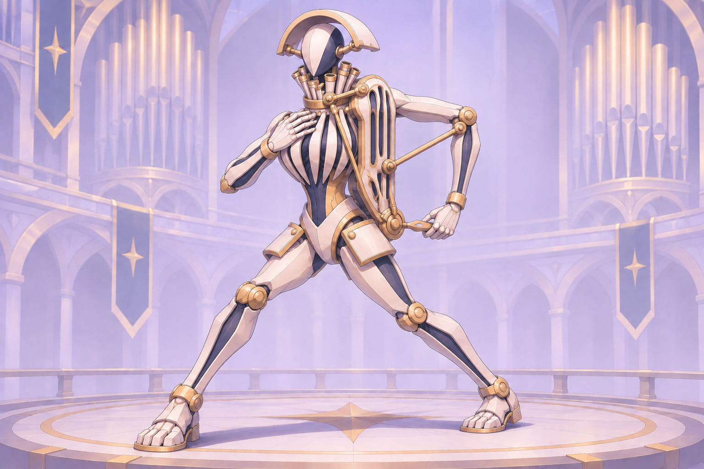

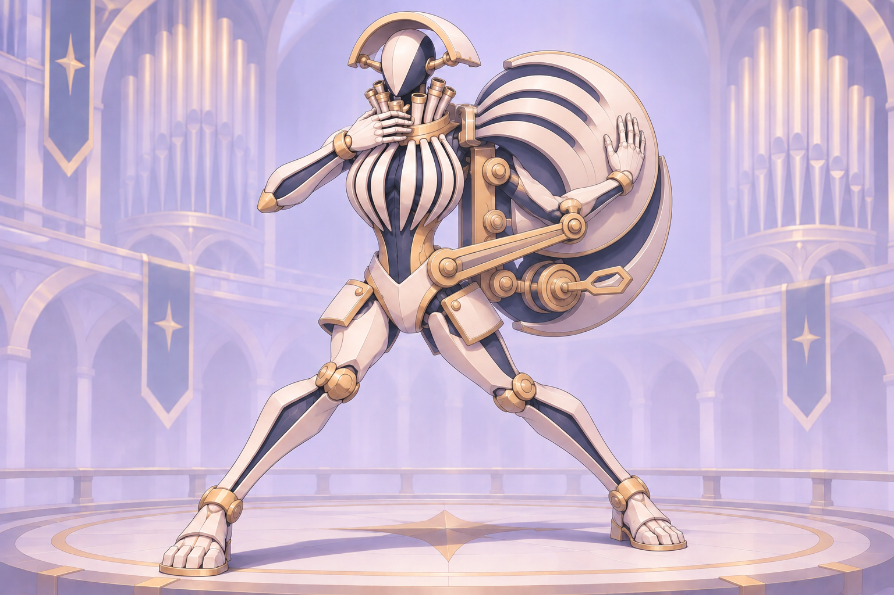
Stage03 · 얼어붙은 혈관의 연금술사
선택 원본: v6 Stage03 선택 3안
원형 의료계기면·백금 베일·반달 늑골 유지, 두 플라스크 저울과 손 U자 봉 완전 교체


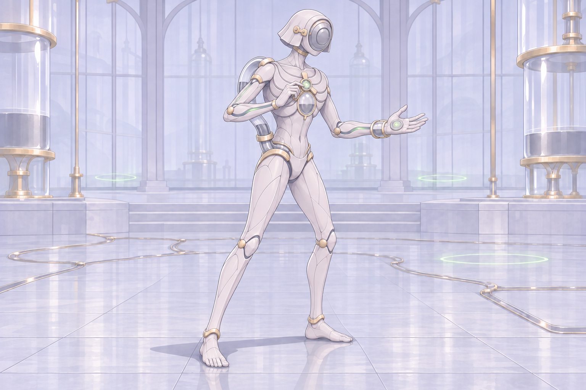

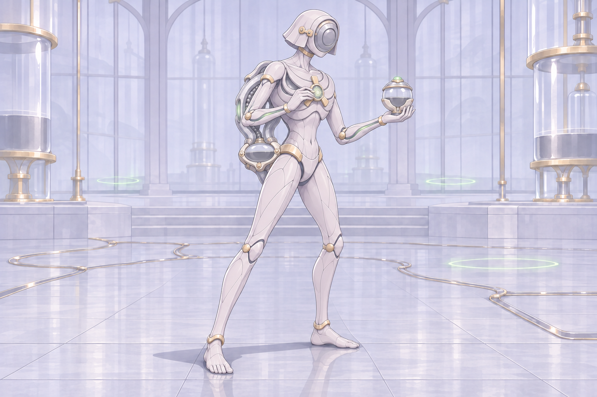

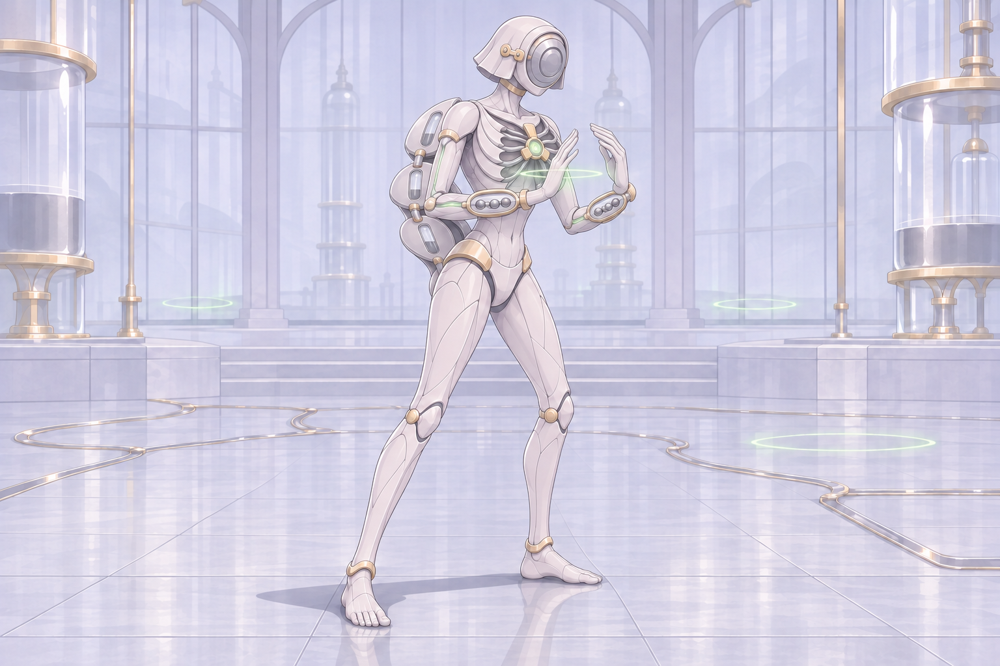
Stage04 · 영원히 타오르는 가마의 수호자
선택 원본: v6 Stage04 선택 3안
쐐기 투구·중갑·대형 건틀릿 유지, 대형 방패를 어깨에 지지 결합. 가로축·롤러 부활 없음


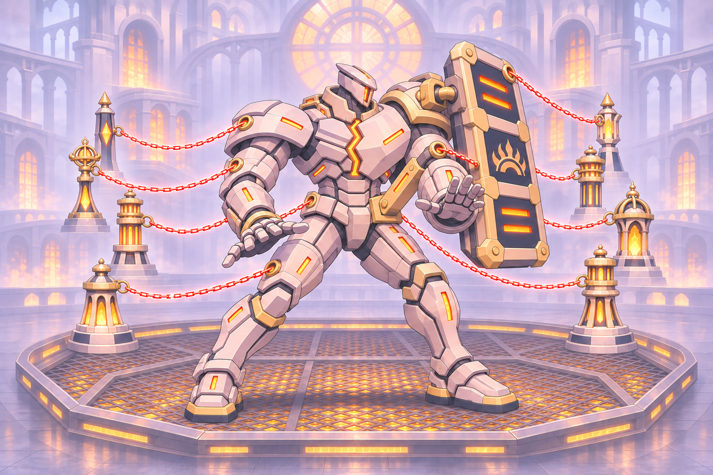

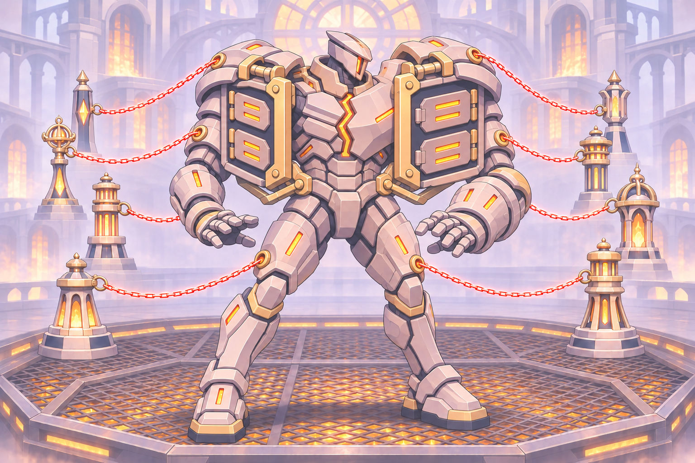

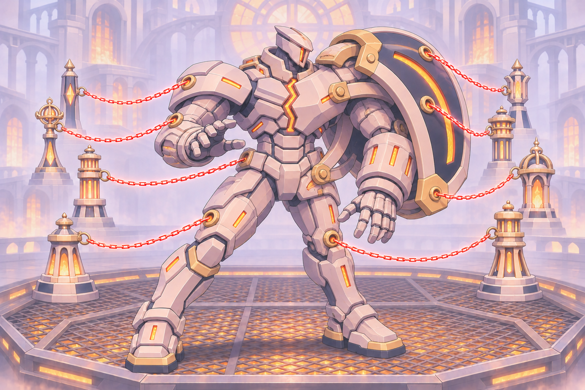
Stage05 · 무너진 천구를 떠받치는 부단장
선택 원본: v6 Stage05 선택 3안
긴 봉인 바이저·별 흉갑·원본 시침 창 유지, 애매한 후방 행성/토성환/막대를 하중 받는 천구 성유물로 교체


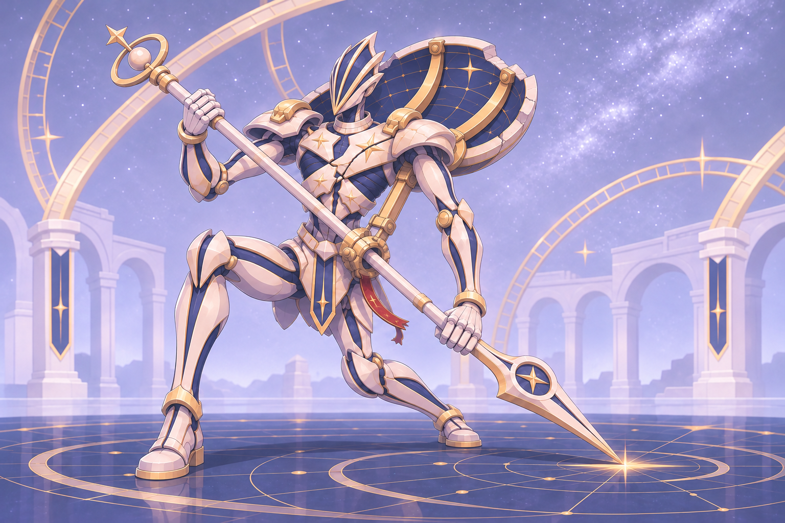

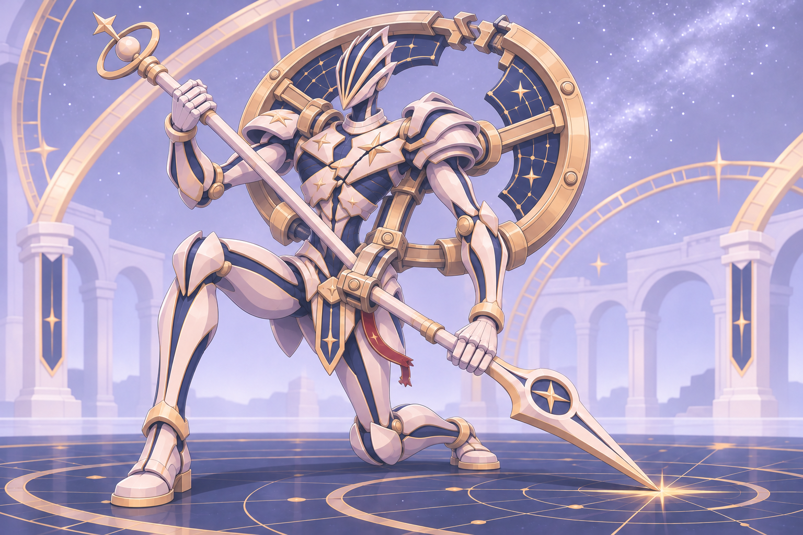

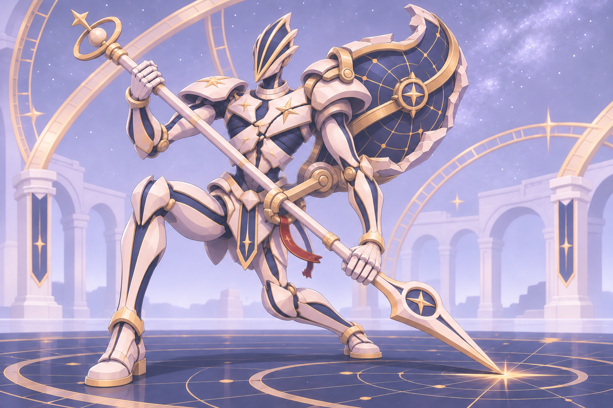
제작: 내장 image_gen. 단일 전신 컨셉샷이며 실제 3D 메시나 회전 렌더는 아닙니다. 전체 프롬프트 · 공통 아트 방향